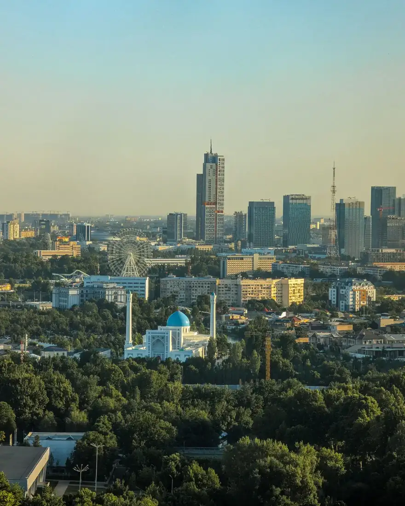
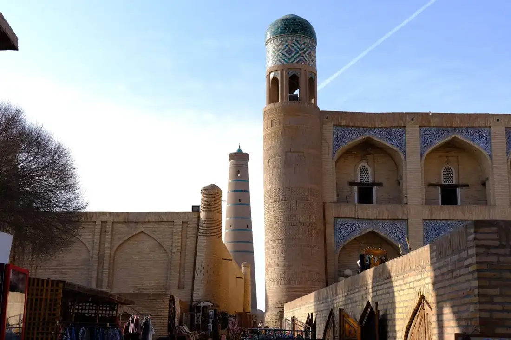

Լավագույն գին1 օր 01Տաշքենդի շրջայց
ՏաշքենդՄեկ օր մայրաքաղաքում՝ Հազրաթի Իմամ, Չորսու շուկա, մետրո և Ամիր Թեմուրի հրապարակ
սկսած…մեկ անձի համար
Դիտել տուրը→
Անհատական և փոքր խմբային տուրեր Ուզբեկստանով՝ Սամարղանդի, Բուխարայի և Խիվայի փիրուզագույն գմբեթներ, անապատային յուրտային ճամբարներ, լեռնային լճեր և ամենաջերմ հյուրընկալությունը։ Մենք պլանավորում ենք ամեն ինչ, դուք պարզապես ճամփորդում եք։
Ավելին Ուզբեկստանի մասինՍկսեք փոքրից կամ անցեք ամբողջ ճանապարհը. յուրաքանչյուր տուր ներառում է լիցենզավորված գիդ, տրանսպորտ և մեր 24/7 աջակցությունը։
Իդեալական է Ուզբեկստանի հետ առաջին ծանոթության համար՝ Տաշքենդում մեկ օրից մինչև չորս օր Սամարղանդի, Բուխարայի կամ լեռների հետ։

Լավագույն գին1 օր 01Մեկ օր մայրաքաղաքում՝ Հազրաթի Իմամ, Չորսու շուկա, մետրո և Ամիր Թեմուրի հրապարակ
 Լավագույն գին3 օր
02
Լավագույն գին3 օր
02Մայրաքաղաքը և Ռեգիստանը երեք օրում՝ Afrosiyob արագընթաց գնացքով
 Լավագույն գին4 օր
03
Լավագույն գին4 օր
03Մետաքսի ճանապարհի երեք մեծ քաղաքներ չորս օրում՝ արագընթաց գնացքով
 Լավագույն գին4 օր
04
Լավագույն գին4 օր
04Չիմգան, Ամիրսոյ և Չարվակ լիճ, գումարած Ռեգիստան՝ չորս օր
Մեր ամենասիրված ծրագրերը՝ Մետաքսի ճանապարհի ամբողջական պատմությունը, բարձրակարգ հյուրանոցներ և կազմակերպված յուրաքանչյուր մանրուք։
 Ֆիրմային8 օր
01
Ֆիրմային8 օր
01Խիվա, Բուխարա, Սամարղանդ և Տաշքենդ՝ մեկնարկ ամեն շաբաթ Խիվայից
 Ֆիրմային5 օր
02
Ֆիրմային5 օր
02Մետաքսի ճանապարհի երկու մարգարիտները հինգ օրում
 Ֆիրմային10 օր
03
Ֆիրմային10 օր
03Խիվայից Սամարղանդ՝ անապատային յուրտայում մեկ գիշերով
 Ֆիրմային7 օր
04
Ֆիրմային7 օր
04Զիյարաթ մեծ իմամներին և սուֆի վարպետներին
Չե՞ք տեսնում ձեր իդեալական ճամփորդությունը։ Մենք կազմում ենք անհատական երթուղիներ զույգերի, ընտանիքների և խմբերի համար։
Կարճ ֆիլմեր քաղաքների, մշակույթի և բնության մասին՝ դիտեք ճամփորդությունից առաջ։
Տեսանյութեր Ուզբեկստանի Տուրիզմի կոմիտեի պաշտոնական ալիքից և միջազգային լրատվամիջոցներից (Euronews, BBC, Insider, Eater) · Դիտել YouTube-ում →
Ֆիքսված մեկնման ամսաթվեր միայնակ ճամփորդների և զույգերի համար. ընտրեք անգլախոս կամ ռուսախոս խումբ, ամեն ինչ կազմակերպված է։
Գիդի ո՞ր լեզուն է ձեզ հարմար
Ամրագրեք առանձին ծառայություն՝ գիդ, տրանսպորտ, հյուրանոց, դիմավորում օդանավակայանում կամ eSIM, առանց ամբողջական տուր գնելու։
 Լիցենզավորված գիդերՊրոֆեսիոնալ տեղական գիդեր քաղաքային շրջայցերի, թանգարանների և ամբողջական ճամփորդությունների համար։→
Լիցենզավորված գիդերՊրոֆեսիոնալ տեղական գիդեր քաղաքային շրջայցերի, թանգարանների և ամբողջական ճամփորդությունների համար։→ Տրանսպորտ վարորդովԱնձնական մեքենա, մինիվեն կամ ավտոբուս վարորդով՝ միջքաղաքային տրանսֆերներ, քաղաքային շրջայցեր և մեկօրյա ուղևորություններ։→
Տրանսպորտ վարորդովԱնձնական մեքենա, մինիվեն կամ ավտոբուս վարորդով՝ միջքաղաքային տրանսֆերներ, քաղաքային շրջայցեր և մեկօրյա ուղևորություններ։→ Հյուրանոցի ամրագրումԳտնում և ամրագրում ենք ձեր բյուջեին համապատասխան հյուրանոցներ՝ հյուրատներից մինչև 5 աստղ։→
Հյուրանոցի ամրագրումԳտնում և ամրագրում ենք ձեր բյուջեին համապատասխան հյուրանոցներ՝ հյուրատներից մինչև 5 աստղ։→ Դիմավորում օդանավակայանում վարորդի կողմիցՁեր անունով ցուցանակով վարորդը դիմավորում է ձեզ ժամանման սրահում և տանում հյուրանոց։→
Դիմավորում օդանավակայանում վարորդի կողմիցՁեր անունով ցուցանակով վարորդը դիմավորում է ձեզ ժամանման սրահում և տանում հյուրանոց։→ Դիմավորում օդանավակայանում գիդի կողմիցՁեր գիդը դիմավորում է ձեզ ժամանման սրահում, օգնում SIM քարտի և արժույթի փոխանակման հարցում և ձեզ հետ գնում հյուրանոց։→
Դիմավորում օդանավակայանում գիդի կողմիցՁեր գիդը դիմավորում է ձեզ ժամանման սրահում, օգնում SIM քարտի և արժույթի փոխանակման հարցում և ձեզ հետ գնում հյուրանոց։→ Խմբեր, միջոցառումներ և MICEԿորպորատիվ ուղևորություններ, խրախուսական տուրեր, համաժողովներ և մեծ խմբային միջոցառումներ։→
Խմբեր, միջոցառումներ և MICEԿորպորատիվ ուղևորություններ, խրախուսական տուրեր, համաժողովներ և մեծ խմբային միջոցառումներ։→ eSIM Ուզբեկստանի համարԲջջային ինտերնետ վայրէջքի պահից՝ ոչ SIM խանութ, ոչ հերթ անձնագրով։→
eSIM Ուզբեկստանի համարԲջջային ինտերնետ վայրէջքի պահից՝ ոչ SIM խանութ, ոչ հերթ անձնագրով։→Խնամքով ընտրված տեղացիներ։ Տեսնում եք իրական կարծիքներ. ամրագրում և վճարում եք անվտանգ Moviy Nomad-ի միջոցով։
Ընտրեք վայրեր, գիշերներ, հյուրանոցներ, տրանսպորտ և գիդ՝ տեսեք երթուղին քարտեզի վրա և գնի ակնթարթային հաշվարկը։
Սկսել →


Մեր թիմը Ուզբեկստանում է և ճանաչում է յուրաքանչյուր փողոց, գիդ և թաքնված գոհար։
Հյուրանոցներ, գնացքներ, տրանսֆերներ, գիդեր և մուտքի տոմսեր՝ մեկ հստակ փաթեթում։
Հալալ սնունդ, ժամանակ աղոթքի համար և հարմարավետ տեմպ ընտանիքների համար։
Անգլախոս և ռուսախոս գիդեր. թուրքերեն և արաբերեն՝ ըստ հարցման։
Ոչ մի թաքնված վճար՝ ամրագրելուց առաջ ճշգրիտ տեսնում եք, թե ինչ է ներառված։
Իրական մարդ WhatsApp-ում կամ Telegram-ում ամբողջ ճամփորդության ընթացքում։
2,5 տարվա ընթացքում Moviy Travel-ի մեր թիմը ճամփորդություններ է կազմակերպել ավելի քան 10 000 ճամփորդի համար։ Moviy Nomad-ը նույն թիմը, գիդերն ու վարորդներն է բերում աշխարհի բոլոր հյուրերին՝ լիցենզավորված տուրօպերատոր (DMC) Ուզբեկստանում. Խիվա, Բուխարա, Սամարղանդ, Տաշքենդ և ավելին։
✓Լիցենզավորված տուրօպերատոր՝ Ուզբեկստանի Հանրապետության Տուրիզմի կոմիտե, լիցենզիա № 887333
Մեր ճամփորդությունները Instagram-ում՝ @moviy_travel58K հետևորդ · 600+ գրառում իրական ճամփորդություններով և ճամփորդներով→Իրական հաղորդագրություններ մեր ճամփորդների խմբային չաթից՝ թարգմանված ուզբեկերենից։
Շնորհակալություն ձեր ողջ աշխատանքի և հոգատարության համար։ Ինքս ինձ խոստացել եմ տարին մեկ անգամ ճամփորդել՝ ձեզ հետ, ընկերներիս և ընտանիքիս հետ միասին։
Գերազանց սպասարկում. մեր վարորդ Նոդիրբեկը բոլորին վերաբերվեց ինչպես հարազատների, և երկար ճանապարհը բոլորովին երկար չթվաց։ Եթե դեռ մտածում եք, պարզապես գնացեք՝ չեք զղջա։
Ավելի լավ էր, քան սպասում էինք։ 500 մարդու հավաքել և ամեն ինչ կազմակերպել փոքր բան չէ։ Խնդրում ենք, ավելի շատ նման ուղևորություններ կազմակերպեք։
Անցած շաբաթն իսկապես անմոռանալի էր, գուցե որովհետև դա իմ առաջին ճամփորդությունն էր։ Վերադարձա հրաշալի տպավորություններով և զարմանալի մարդկանց հիշողություններով։
Մեր ճամփորդների կիսած լուսանկարներն ու պատմությունները։ Ճամփորդե՞լ եք մեզ հետ։ Ավելացրեք ձերը։
Դեռ պատմություններ չկան՝ եղեք առաջինը։
Շատ երկրների քաղաքացիներ կարող են այցելել Ուզբեկստան առանց վիզայի կամ պարզ էլեկտրոնային վիզայով։ Նշեք ձեր անձնագրի երկիրը՝ կստուգենք գործող կանոնները։
Գարունը (ապրիլ–հունիս) և աշունը (սեպտեմբեր–հոկտեմբեր) իդեալական են Սամարղանդի, Բուխարայի և Խիվայի համար։ Ամառը լավ է լեռների, Չարվակ լճի և Ֆերգանայի հովտի համար. ձմեռը հանգիստ է և էժան։
Այո։ Մենք պլանավորում ենք անհատական տուրեր զույգերի և ընտանիքների համար, ինչպես նաև խմբային տուրեր և ծրագրեր տուրիստական գործակալությունների համար։
Տարածաշրջանի սննդի մեծ մասը հալալ է։ Կարող ենք նաև ծրագիրը կազմել աղոթքի ժամերին և սրբավայրերի այցելություններին համապատասխան։
Գրեք մեզ WhatsApp-ով կամ Telegram-ով։ Ծրագիրը հաստատելուց հետո կհաստատենք ամրագրումը և կուղարկենք վճարման տվյալները։
Այո։ Մենք տրամադրում ենք տեղական սպասարկում և գործընկերային գներ գործակալությունների և խմբերի համար։
Ընտրեք ձեզ հարմար եղանակը՝ կպատասխանենք գաղափարներով, ծրագրով և գնով։
+998 97 542 77 99 · Maftuna Artikova